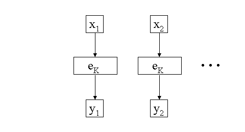
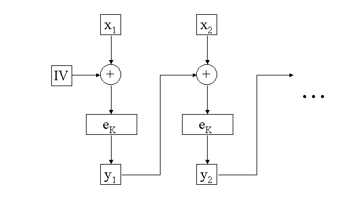
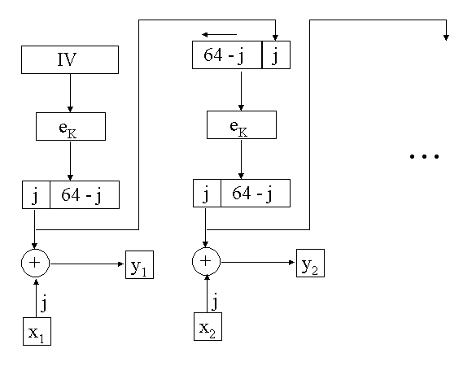
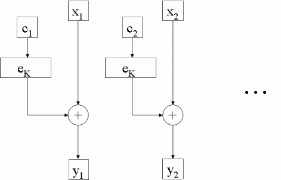

Jedna važna primjena DES-a je u bankarskim transakcijama. Tako se, između ostalog, DES koristio za šifriranje PIN-ova (personal identification numbers), te transakcija preko bankomata. DES je također do nedavno bio u širokoj uporabi u civilnim satelitskim komunikacijama.
Mi smo do sada opisali kako radi DES na jednom bloku od 64 bita.
U realnim situacijama, u kojima su poruke znatno duže, poznata
su 4 načina djelovanja (modes of operation) DES-a. Ti
modovi pokrivaju sve moguće primjene DES-a, a također su
primjenjivi na bilo koju simetričnu blokovnu šifru.
Najjednostavniji mod je ECB (Electronic Codebook) u kojem se svaki blok otvorenog teksta šifrira s istim ključem. Dakle, poruka se razbije na blokove od po 64 bita (zadnji blok se nadopuni ako je nužno), te se šifrira jedan po jedan blok koristeći uvijek jedan te isti ključ.

ECB mod je idealan za kratke poruke, pa se često koristi za razmjenu ključeva za šifriranje. Kod dugih poruka sigurnost ECB moda se smanjuje, budući da identični blokovi u otvorenom tekstu daju identične šifrate.
Da bi povećali sigurnost, želimo postići da identičnim blokovima u
otvorenom tekstu odgovaraju različiti šifrati. Relativno jednostavan
način da se to postigne je korištenje CBC (Cipher Block Chaining) moda.
Na trenutni blok otvorenog teksta se primjeni operacija XOR sa
šifratom prethodnog bloka, a tek potom se šifrira pomoću ključa
K.
Dakle,

U prethodna dva moda DES funkcionira kao blokovna šifra. No, od DES-a se može napraviti i protočna (stream) šifra. Prvi način je pomoću CFB (Cipher Feedback) moda. Kod protočnih šifri nema potrebe za proširivanjem poruke da bi se dobio cijeli broj blokova. To znači da će šifrat biti iste duljine kao otvoreni tekst. Obrađuje se odjednom j bitova (1 ≤ j ≤ 64). Najčešće je j = 1 ili j = 8. Ako je j = 8, to znači da se šifrira slovo po slovo (jednom slovu odgovara 8 bitova po ASCII standardu).U šifriranje krećemo šifriranjem 64 bitnog inicijalizirajućeg vektora IV. Na j najlijevijih bitova izlaznog podatka primijenimo XOR sa x1 i tako dobijemo y1. Ulazni podatak za sljedeći korak šifriranja se dobije tako da se prethodni ulazni podatak pomakne za j mjesta ulijevo, a na desni kraj se stavi y1. Postupak se nastavlja sve dok se sve jedinice otvorenog teksta ne šifriraju.
Kod dešifriranja se koristi ista shema, osim što se na odgovarajući šifrat primjeni XOR s izlaznim podatkom funkcije šifriranja eK da bi se dobio otvoreni tekst. Uočimo da se ponovo koristi funkcija eK, a ne dK. Naime, ovdje je funkcija šifriranja zapravo XOR, a on je sam sebi inverz. Zapravo, ovaj modus možemo shvatiti kao svojevrsnu realizaciju "jednokratne bilježnice", u kojoj nam eK ne služi za šifriranje, već za generiranje "pseudoslučajnog" ključa za jednokratnu bilježnicu. Ovo pokazuje da inicijalni vektor IV mora biti "svjež", tj. ne bi se dvaput smio koristiti isti inicijalni vektor.
OFB (Output Feedback) mod je vrlo sličan kao CFB. Jedina razlika je da se ulazni podatak za funkciju eK u idućem koraku šalje odmah nakon primjene eK u prethodnom koraku (prije primjene XOR-a). Jedna od prednosti OFB moda je da se greške u transmisiji ne propagiraju. Npr. greška u y1 utječe samo na x1. Ovaj mod se često koristi u šifriranje poruka sa satelita. No, ovo svojstvo može biti i nedostatak. Stoga se modovi CBC i CFB koriste za ustanovljavanje vjerodostojnosti poruke.

Pored ova četiri (klasična) načina djelovanja, u posljednje je vrijeme sve
popularniji CTR (Counter) mod. U njemu se koristi niz brojača (countera)
yi = xi ⊕ eK(ci).
Brojači moraju biti u parovima različiti. Obično se to postiže tako da se brojaču c1 pridruži neka inicijalna vrijednost, a potom se ostali brojači povećavaju za 1:Za razliku od prethodna tri "ulančana" (chaining) moda, u CTR modu se šifriranje (i dešifriranje) može lako paralelizirati. Kod ulančanih modusa je to bio problem, jer je algoritam morao završiti obradu jednog bloka, da bi prešao na naredni. To pokazuje još jednu prednost CTR modusa, a to je mogućnost dešifriranja samo jednog određenog bloka, što može biti interesanstno za neke aplikacije. Slično kao kod CFB i OFB modusa, i ovdje se u dešifiranju ponovo koristi funkcija eK (a ne dK). Ovo nije neka posebna prednost kod DES-a, ali može biti relevantno kod blokovnih kriptosustava kod kojih algoritam dešifriranja nije doslovno isti kao algoritam šifriranja (npr. AES).

| Web stranica kolegija Kriptografija | Andrej Dujella - osobna stranica |